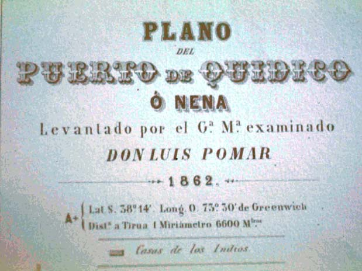

|
|  |
| Luis Pomar, Map of Quidico Harbour, indicating 'houses
of Indians' |
Maps and plans were another visual technology of representing (and, in
the very act of representation, of producing) otherness as an empirical
"given". Toponyms such as "Indian dwellings", "wild tribes", or
"savages" continue to appear on national maps well into the second half
of the nineteenth century, indicating a space yet to be fully recorded
and "tamed". The very lack of cartographic detail signposted
these lands as spaces for extension, not just of
cartography but of the practices of occupation, colonization and
"civilisation" that went with it, following a tradition that had
started with Iberian imperial expansion in the fourteenth and fifteenth
century (which, of course, would have been technically impossible
without the developments in topographic mapmaking). Like in museum
displays, the capacity to place
groups and communities conferred on the mapmaker and the beholder a
power of representation that excluded itself from place. Looking at
maps, one is removed from place, and this removal confers power to
spatiality over locality, to surveying over dwelling.

|